പീലിയുടെ ഗ്രാമത്ിലേക്ുളള യാാത്രയിൽ രാത്രിാത്രിയിലെ ആകാാശക്കാാഴ്ചകൾ നിങ്ങൾ
ആസ്്വദിച്ചില്ലേ. യാാത്രയ്ക്കുശേഷം അപ്ു എഴുതിയ വിവരണം ശ്രദ്ിക്കൂ.
10
10
വിണ്ിലെ വിസ്മയങ്ങളും
വിണ്ിലെ വിസ്മയങ്ങളും
മണ്ിലെ വിശേഷങ്ങളും
മണ്ിലെ വിശേഷങ്ങളും
നിലാവ് പൊൊഴിച്ചുനിൽക്കുുന്ന
ചന്ദ്രന്റെ മനോ�ോഹാരിതയിൽ
ആകാശം എത്ര സുുന്ദരമാണ്!
മുുത്തുുകൾ വാരിവിതറിയതുു
പോോോലെ അനേകായിരം
നക്ഷത്രങ്ങൾ ജ്്വലിച്്
നിൽക്കുന്നുു. അവയ്ക്കൊപ്ം
തിളങ്ങി നിൽക്കുുന്ന ഒരുു
ആകാശ ഗോളത്തെ നോക്ി
പീലി പറഞ്ഞുു. 'അതൊരുു
ഗ്രഹമാണ്.' അത്ഭുുത
ത്തോടെ നോക്ിനിന്ന ഞങ്ങ
ളോട് വിക്ി വിളിച്ചുപറഞ്ഞുു.
"അതാണ് ശുുക്രൻ." അപ്്പപോൾ
നീനുു ചോ�ോദിച്ചു "ഗ്രഹമായിട്്
കൂടി ശുുക്രൻ ഇങ്ങനെ
തിളങ്ങുുന്നതെന്തുകൊ�ൊണ്ടെന്ന്
നിങ്ങൾക്കറിയാമോ�ോ?"
എല്ാവരുും കൗതുുകത്്തതോടുു
കൂടി നീനുുവിനെ നോ�ോക്ി.
പിന്നീടങ്്ങങോ
ട്് ആകാശത്തിലെ
അത്ഭുുതക്ാഴ്ചകളുടെ
കെട്ടഴിയുുകയായിരുന്നുു.
Page 57


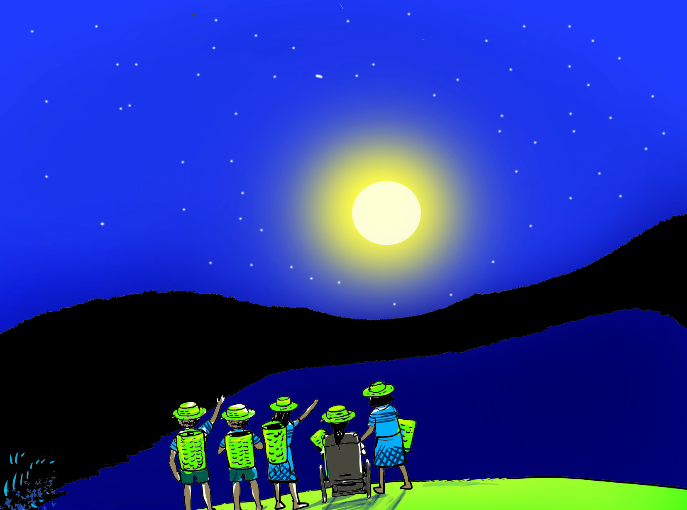
Page 58

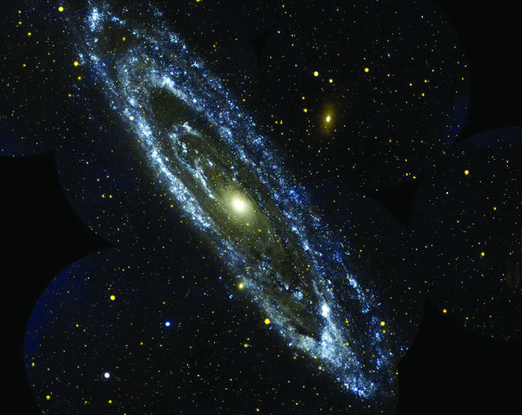
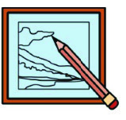
162
സാമൂഹ്്യശാസ്ത്രം | ക്ാസ് V
രാത്രിാത്രിയിലെ ആകാാശക്കാാഴ്ചകൾ എല്ലാാവർക്ും ഇഷ്ടമല്ലേ? രാത്രിാത്രിയിലെ മനോ�ോഹരമാായ
ആകാാശക്കാാഴ്ചകൾ പകൽ നമുക്് ദൃശ്യമാാകാത്തത് എന്തുകൊ�ൊണ്്? കാാരണങ്ങൾ
ഒന്് എഴുതിനോാക്കൂ.
സൂര്്യന്റെ സാാന്ിധ്്യമാാണ് ഇതിന് കാാരണമെന്് മനസ്ിലാായില്ലേ. സൂര്്യൻ ഒരു
നക്ഷത്രമാാണ്. ഭൂൂമിയോ�ോട് ഏറ്റവും അടുത്് സ്ിതിചെയ്യുന്ന നക്ഷത്രവും സൂര്്യനാാണ്.
സൂര്്യനേക്കാാൾ വലിപ്പമുളള മറ്റനേകം നക്ഷത്രങ്ങളുമുണ്്.
ഭൂൂമിയിൽ നിന്് നോാക്കുമ്പോാൾ നക്ഷത്രങ്ങൾ വളരെ ചെറുതാായി കാാണുന്നില്ലേ.
എന്തുകൊാണ്്?
സൂര്്യനെ കേന്ദ്രമാാക്ി ചില ആകാാശഗോuോളങ്ങൾ ചുറ്റിക്കറങ്ങിക്്കകൊണ്ിരിക്ുന്ു.
സൂര്്യനും ഈ ആകാാശഗോuോളങ്ങളും ഉൾപ്പെടുന്ന ചിത്രം നിരീക്ഷിക്കൂ.
സൂര്്യൻ ഉദിക്ുന്ന സമയത്തെയോ�ോ അസ്തമിക്ുന്ന സമയത്തെയോ�ോ പ്രകൃതി
ഭംഗി വ്യക്തമാക്ുന്ന ചിത്ം വരയ്കൂ.
നക്ഷത്രങ്ങളിൽ നിന്ന് നേർരേഖയിൽ വരുന്ന
പ്രകാശം അന്തരീക്ഷത്തിലൂടെ കടന്നുന്നുവരുമ്പ
ോൾ
നിരന്തരമായി ദിശാവ്യതിയാനത്തിന് വിധേയമാകുന്നു.
അതുകൊ�ൊണ്ടാണ് ഭൂമിയിൽ നിന്ന് നോ�ോക്കുമ്പ
ോൾ
നക്ഷത്രങ്ങൾ മിന്നുന്നതായി നമുക്് തോ�ോന്നുന്നത്.
നക്ഷത്രങ്ങൾ മിന്നുന്നതെന്തുകൊ�ൊണ്് ?
ഗാാലക്സികൾ
ഭൂൂമിയിൽ നിന്് വളരെ അകലെ സ്ിതി
ചെയ്യുന്നതുകൊ�ൊണ്ടാാണ്
നക്ഷത്രങ്ങൾ
ചെറുതാായി കാാണപ്പെടുന്നത്. സ്്വയം കത്തുന്ന
ഭീമാാകാാരമാായ
ആകാാശഗോuോളങ്ങളാാണ്
നക്ഷത്രങ്ങൾ. നക്ഷത്രങ്ങൾ വലിയ അളവിൽ
താാപവും പ്രകാാശവും പുറത്ുവിടുന്ു.
കോ�ോടിക്കണക്ിന് നക്ഷത്രങ്ങൾ ഉൾപ്പെടുന്ന
നക്ഷത്രക്കൂട്ടങ്ങളാാണ് ഗാാലക്സികൾ (Galaxies).
Page 59
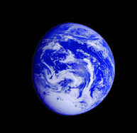
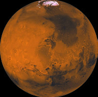
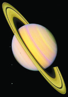
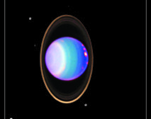
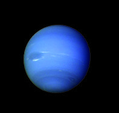
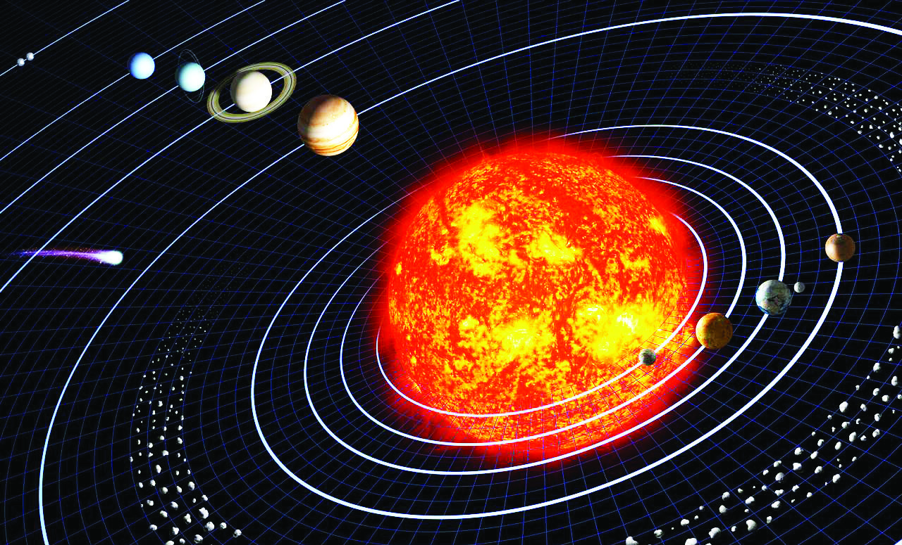
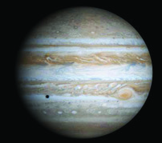
163
വിണ്ിലെ വിസ്മയങ്ങളും മണ്ിലെ വിശേഷങ്ങളും
ചിത്രത്ിൽ സൂര്്യനെ കൂടാതെ
മറ്റേതെല്്ലാാംാം ആകാാശഗോuോളങ്ങൾ കാാണപ്പെടുന്ു?
നാാം അധിവസിക്കുന്ന ആകാാശഗോuോളം ഇതിൽ ഏതാാണ്?
ഭൂൂമി ഒരു ഗ്രഹമാാണ്. എന്താാണ് ഗ്രഹങ്ങൾ?
സ്്വയം കറങ്ങുകയും സൂര്്യനെ വലംവയ്കുകയും ചെയ്യുന്ന ആകാാശഗോuോളങ്ങളാാണ്
ഗ്രഹങ്ങൾ. ഗ്രഹങ്ങൾക്് ചൂടോ�ോ പ്രകാാശമോ�ോ സ്്വയം പുറപ്പെടുവിക്കാാൻ കഴിയില്ല.
സൂര്്യനിൽ നിന്നാാണ് ഗ്രഹങ്ങൾക്് ചൂടും പ്രകാാശവും ലഭിക്കുന്നത്. സൂര്്യനെ
വലംവയ്ക്കുന്ന ഗ്രഹങ്ങൾ ഏതെല്ലാമെന്ും അവ ഓരോ�ോന്നിന്റെയും പ്രത്്യയേകതകൾ
എന്തെല്ലാമെന്ും പട്ടികനോ�ോക്ി മനസ്ിലാാക്കൂ.
ചിത്രം-1
ഗ്രഹങ്ങൾ
സവിശേഷതകൾ
ഗ്രഹങ്ങൾ
സവിശേഷതകൾ
ബുധൻ
സൂര്്യനോ�ോട് ഏറ്റവും
അടുത്ത് സ്ിതിചെയ്ുന്ന
ഗ്രഹം
വ്യയാാഴം
ഏറ്റവും വലിയ ഗ്രഹം
ശുക്രൻ
പ്രഭാതനക്ഷത്ം,
പ്രദോ�ോഷനക്ഷത്ം
എന്നിങ്ങനെ
അറിയപ്പെടുന്ന ഗ്രഹം
ശനി
വലുപ്പത്തിൽ രണ്്ടാാം
സ്ഥാനമുളള ഗ്രഹം
ഭൂൂമി
ജീവൻ നിലനിൽക്ുന്ന
ഒരേ ഒരു ഗ്രഹം
യുറാാനസ്
ഏറ്റവും തണുപ്പുളള ഗ്രഹം
ചൊ�ൊവ്വ
ചുവന്ന ഗ്രഹം
നെപ്ടട്്യയൂൂൺ
സൂര്്യനിൽ നിന്ന് ഏറ്റവും
അകലെ സ്ിതിചെയ്ുന്ന
ഗ്രഹം
സൂര്്യൻ
സൂര്്യൻ
ബുധൻ
ബുധൻ
വ്യയാാഴം
വ്യയാാഴം
ശനി
ശനി
യുറാാനസ്
യുറാാനസ്
നെപ്ടട്്യയൂൂൺ
നെപ്ടട്്യയൂൂൺ
വാാൽനക്ഷത്രം
വാാൽനക്ഷത്രം
കുള്ളൻഗ്രഹങ്ങൾ
കുള്ളൻഗ്രഹങ്ങൾ
ക്ഷുദ്ര ഗ്രഹങ്ങൾ
ക്ഷുദ്ര ഗ്രഹങ്ങൾ
ശുക്രൻ
ശുക്രൻ
ഭൂൂമി
ഭൂൂമി
ചന്ദ്രൻ
ചൊ�ൊവ്വ
ചൊ�ൊവ്വ
Page 60

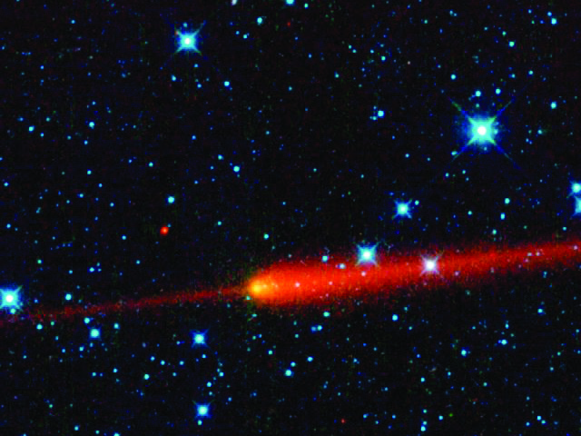
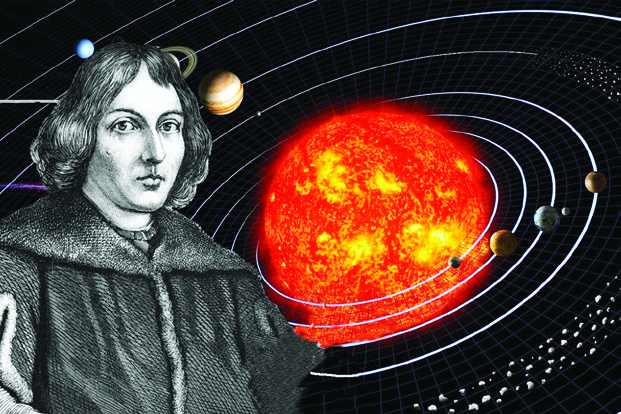
164
സാമൂഹ്്യശാസ്ത്രം | ക്ാസ് V
സൂര്്യനെയും അതിനെ വലംവയ്ക്കുന്ന ആകാാശഗോാളങ്ങളുടെയും ചിത്രം നിങ്ങൾ
ശ്രദ്ിച്ചില്ലേ.
ഗ്രഹങ്ങൾ മാാത്രമാണോ�ോ സൂര്്യനെ വലംവയ്ക്കുന്നത്? ചിത്രം-1 ൽ (പേജ് 163) ഗ്രഹങ്ങളെ
കൂടാതെ
കുള്ളൻഗ്രഹങ്ങളെയും ക്ഷുദ്രഗ്രഹങ്ങളെയും കണ്ടില്ലേ.
സൂര്്യൻ, സൂര്്യനെ ചുറ്റുന്ന എട്ട് ഗ്രഹങ്ങൾ, അവയുടെ ഉപഗ്രഹങ്ങൾ, കുളളൻ
ഗ്രഹങ്ങൾ, ക്ഷുദ്രഗ്രഹങ്ങൾ, ഉൽക്കൾ, വാാൽനക്ഷത്രങ്ങൾ എന്ിവ ചേർന്നതാാണ്
സൗരയൂൂഥം. സൗരയൂൂഥത്തിന്റെ കേന്ദ്രംന്ദ്രം സൂര്്യനാാണ്.
വാൽനക്ഷത്രങ്ങൾ
സൗരയൂഥത്തിൽ അപൂർവമായെത്തുന്ന
വിരുന്നുകാരാണ് വാൽനക്ഷത്രങ്ങൾ അഥവാ
ധൂമകേതുക്കൾ (Comets). പാറ, പൊ�ൊടി,
ഹിമം എന്നിവ ചേർന്നാണ് വാൽനക്ഷത്രങ്ങൾ
രൂപപ്പെടുന്നത്. സൂര്്യനോ�ോടടുക്കുമ്പ
ോൾ
ഇവയുടെ വാൽ സൂര്്യപ്രകാശമേറ്റ്റ്റ് തിളങ്ങുന്നു.
സൗരയൂൂഥം ഉൾപ്പെടുന്ന ഗാാലക്സിയാാണ് ക്ഷീരപഥം അഥവാാ ആകാാശഗംഗ
(Milky Way). ഇതിൽ കോ�ോടാാനുകോ�ോടി നക്ഷത്രങ്ങളുണ്്. ഇത്തരത്ിലുളള
കോ�ോടിക്കണക്ിന് ഗാാലക്സികൾ ഉൾപ്പെടുന്നതാാണ് പ്രപഞ്ം (Universe).
കുള്ളൻഗ്രഹങ്ങൾ
സൗരയൂഥത്തിൽ സൂര്്യനുചുറ്്റുുംും പരിക്രമണം ചെയ്ുന്ന
ഗ്രഹങ്ങളെക്കാൾ ചെറുതും ഗോ�ോളാകൃതിയിലുളളതുമായ
വസ്തുക്കളാണ് കുള്ളൻഗ്രഹങ്ങൾ (Dwarf Planets).
ക്ഷുദ്രഗ്രഹങ്ങൾ
ചൊ�ൊവ്വയ്കും വ്യയാഴത്തിനുമിടയിലായി കാണപ്പെടുന്ന
ചെറുഗ്രഹങ്ങൾ
പോ�ോലുളള
ശിലാകഷ്ണങ്ങളാണ്
ക്ഷുദ്രഗ്രഹങ്ങൾ (Asteroid).
സൗരയൂ
ൂഥത്തിന്റെź കേ�ന്ദ്രം സൂര്യയനാാ
ണെ�ന്ന് ലോ�ോകത്തോ�ോട് പറഞ്ഞത്
നിക്കോ�ോളസ് കോ�ോപ്പർനിക്കസ് ആണ്.
ഇദ്ദേŔഹം പോ�ോളണ്ടുകാാരനാായ വാാന
ശാസ്ത്രജ്ഞനായിരുന്നു.
Page 61
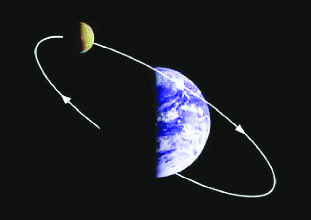
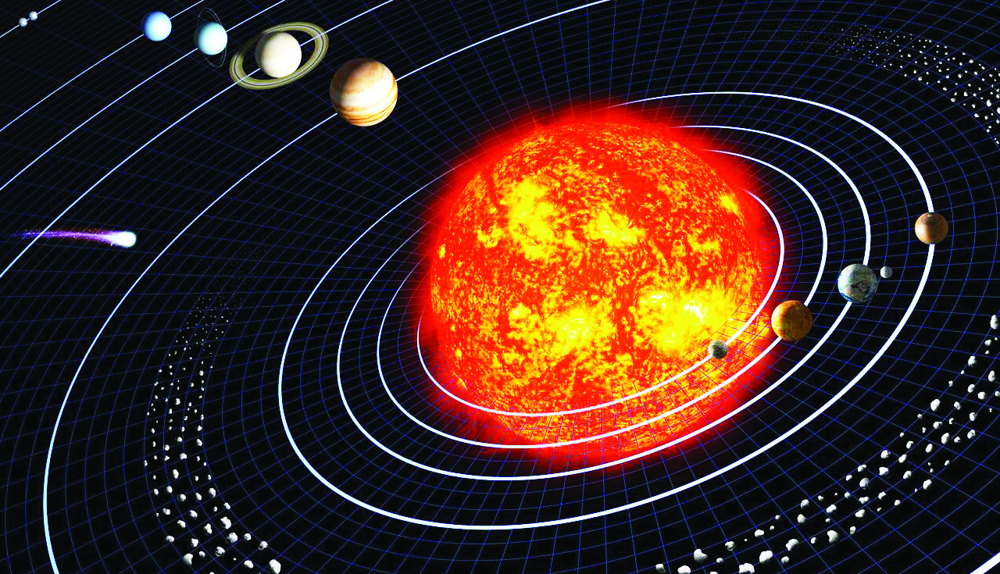
165
വിണ്ിലെ വിസ്മയങ്ങളും മണ്ിലെ വിശേഷങ്ങളും
ഗ്രഹങ്ങൾക്ുചുറ്്റുുംും നിശ്ിത സഞ്ചാാരപഥത്ിലൂൂടെ വലംവച്ചുകൊ�ൊണ്ിരിക്കുന്ന
ആകാാശഗോuോളങ്ങളാാണ് ഉപഗ്രഹങ്ങൾ (Satellites). ഭൂൂമിയുടെ ഏക ഉപഗ്രഹമാാണ് ചന്ദ്രൻ.
നക്ഷത്രമാസം
ചന്ദ്രന് ഭൂമിയെ ഒരു തവണ
വലംവയ്ക്കാൻ ഏകദേശം 27.3
ദിവസം വേണ്ി വരുന്നു. ഇതാണ്
ഒരു നക്ഷത്രമാസം (Sidereal Month).
ഭൂമി
ചന്ദ്രൻ
സൗരയൂൂഥത്തിന്റെ ചിത്രത്ിൽ ഗ്രഹങ്ങളുടെ സഞ്ചാാരപാാത നിരീക്ഷിക്കൂ. സൂര്്യനെ
ചുറ്റിയുള്ള ആകാാശഗോuോളങ്ങളുടെ സഞ്ചാാരപാാതയാാണ് അവയുടെ ഭ്രമണപഥം
(Orbit). ദീർഘവൃത്താാകൃതിയിലുള്ള ഭ്രമണപഥത്ിലൂൂടെയാാണ് ഗ്രഹങ്ങൾ സൂര്്യനെ
വലംവയ്ക്കുന്നത്. ഗ്രഹങ്ങളെ അവയുടെ നിശ്ിത ഭ്രമണപഥത്ിൽക്കൂടി സഞ്ചരിക്ുവാാൻ
സഹാായിക്കുന്നത് ഗ്രഹങ്ങളും സൂര്്യനും തമ്ിലുളള ആകർഷണബലമാാണ്. സൂര്്യനെ
വലംവയ്ക്കുന്നതോാടൊാപ്ം ഗ്രഹങ്ങളെല്്ലാാംാം അവയുടെ സാാങ്കല്ിക അച്ുതണ്ിൽ സ്്വയം
കറങ്ങുന്ു.
ഉൽക്കൾ
ക്ഷുദ്രഗ്രഹങ്ങളിൽനിന്്നുുംും മറ്്റുുംും ഭൂമിയുടെ
അന്തരീക്ഷത്തിലേക്് അതിവേഗത്തിൽ
പ്രവേശിക്ുന്ന ശിലാകഷ്ണങ്ങളാണ് ഉൽക്കൾ
(Meteors). രാത്ി സമയങ്ങളിൽ അവ
അതിവേഗം സഞ്ചരിക്ുന്ന തീപ്്പപൊരികളായി
ആകാശത്ത് കാണപ്പെടുന്നു. ഏതാനും
സെക്കൻഡുകൾ കൊ�ൊണ്് ഇവ കത്തിത്തീരുന്നു.
പ്രാദേശ
ികമായി ഇവ കൊ�ൊള്ളിള്ളിമീനുകൾ എന്ന്
അറിയപ്പെടാറുണ്്.
കൂട്ടുൂട്ടുകാാരുടെ സഹാായത്്തതോടെ സൗരയൂൂഥം റോ�ോൾപ്ലേ ആയി അവതരി
പ്ിക്കൂ. ഓരോ�ോ ഗ്രഹവും അവരവരുടെ സവിശേഷതകൾ സ്്വയം പരിചയപ്പെ
ടുത്ുവാാൻ മറക്കല്ലേ.
Page 62

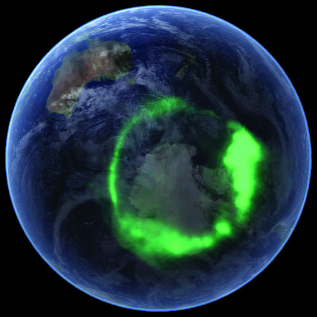
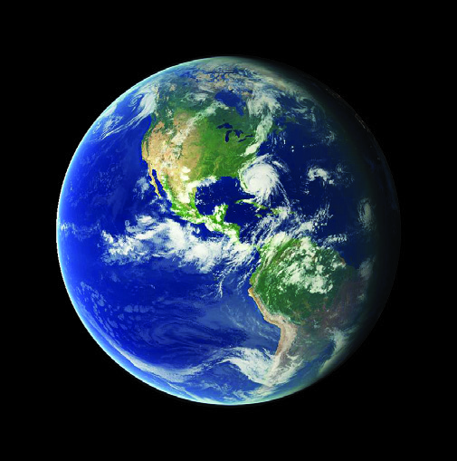
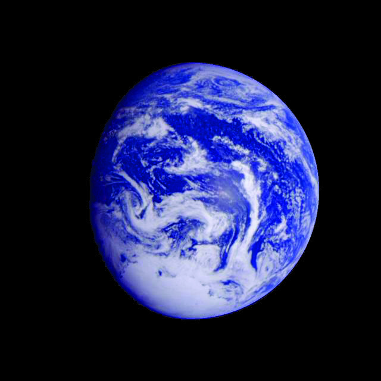

166
സാമൂഹ്്യശാസ്ത്രം | ക്ാസ് V
നമ്മുടെ ഭൂമി
ബഹിരാാകാാശസഞ്ചാാരിയാായ സുനിതാാ വില്യയംസ് ഭൂൂമിയെക്ുറിച്് പറഞ്ഞത് വാായിക്കൂ.
സൗരയൂൂഥത്ിൽ ജീവൻ നില
നിൽക്കുന്ന ഏക ഗ്രഹമാാണ് ഭൂൂമി.
ഭൂൂമിയ്ക്ക് സവിശേഷമാായ ഒരു ഗോാളാാകൃതി
യാാണുളളത്. ധ്ുവങ്ങൾ അല്ം പര
ന്നതും ഭൂൂമധ്്യരേഖാാഭാഗം ചെറുതാായി
വീർത്തുമാായ ഗോuോളാാകൃതിയാാണിത്.
ഈ ആകൃതിയാാണ് ജിയോ�ോയിഡ് (Geoid).
ജിയോ�ോയിഡ് എന്ന പദത്ിന് ഭൂൂമിയുടെ
ആകൃതി എന്നാാണ് അർഥം.
ഭാരതീയ ശാസ്ത്രജ്ഞനായ ആര്്യഭടൻ ഭൂമിക്് ഗോളാകൃതിയാണെന്്നുുംും
സാങ്കല്ിക അച്ുതണ്ിൽ അത് സ്വയം കറങ്ങുന്നുവെന്്നുും
ും വിശ്വസിച്ചിരുന്നു.
ഗ്രീക്് തത്വചിന്തകരായ തെയിൽസ്, പൈതഗോറസ്, അരിസ്റ്റോട്ിൽ
എന്നിവരും ഭൂമിക്് ഗോളാകൃതിയാണെന്ന്ന്ന് വിശ്വസിച്ചിരുന്നവരാണ്.
പിൽക്കാലത്ത് മഗല്ലൻ എന്ന നാവികന്റെ ലോകം ചുറ്റിയുള്ള കപ്പൽയാത്ര
ഭൂമി ഉരുണ്ടതാണെന്ന്ന്ന് തെളിയിച്ു.
ബഹിരാാകാാശം
ഒരു ജ്യോ�ോ�തിർഗോ�ോളത്തിന്റെź
അന്തരീക്ഷ പരിധിക്കപ്പുറമുള്ള
മേ�ഖലയാാണ് ബഹിരാാകാാശം.
വിവിധ രാാജ്യയയങ്ങളിൽ നിന്നുംം� വ്യയത്യയയസ്ത
ങ്ങളായ പഠനങ്ങൾക്കായും പര്്യവേഷണ
ത്തിനായും ബഹിരാകാശത്തേയ്ക്ക് വിദഗ്ധരെ
അയക്കാറുണ്്.
ബഹിരാകാശത്തുനിന്ന് എടുത്ത ഭൂമിയുടെ ചിത്രങ്ങൾ
“ഭൂമി ഏറെെ മനോ�ോഹരവുംം� ആശ്ചര്യയയജനകവുമാായി
തോ�ോന്നി. ബഹിരാാകാാശ നിലയത്തിന്റെź ജനാാലയിലൂടെ
മണിക്കൂറുകളോ�ോളം ഞങ്ങൾക്കത് നോ�ോക്കിക്കാാണാാനാായി.
ഭൂമിയുടെ ഗോ�ോളാാകൃതി ഞങ്ങൾക്ക് വ്യയക്തമാായി കാാണാാൻ
കഴിഞ്ഞു.”
സുനിത വില്യയംസ്
Page 63


167
വിണ്ിലെ വിസ്മയങ്ങളും മണ്ിലെ വിശേഷങ്ങളും
ഭൂൂമിിയിിൽ ജീീവൻ നിിലനിിർത്തുുന്നതിിൽ അന്തരീീക്ഷംം വഹിിക്കുുന്ന
പങ്കിിനെ�ക്കുുറിിച്ച്് ചർച്ചചെ�
യ്ത്് കുുറിിപ്പ്് തയ്യാാറാക്കൂ.
അച്ഛാ, ഞാാനിപ്്പപോൾ
അത്താാഴം കഴിച്ചതേ
ഉള്ളു. ഉറങ്ങാാനുുളള
തയ്യാാറെടുപ്പി്പിലാാണ്.
ബഹിരാകാശത്തുനിന്ന് എടുത്ത ഭൂമിയുുടെ ചിത്രങ്ങൾ ശ്രദ്ിക്ൂ. ഈ
ചിത്രങ്ങളിൽ ഭൂമി ഒരുു നീലഗോളമായല്ലേ കാണപ്പെടുന്നത്്? എന്തുകൊണ്ാണിങ്ങനെ?
ഭൂമിയുുടെ മാതൃകയായ ഗ്ലലോബിൽ ഏത്് നിറമാണ്് കൂടുുതൽ കാണപ്പെടുന്നത്്?
ഭൂമിയുുടെ ഉപരിതലത്തിന്റെ ഏകദേശം 71% ജലമായതിനാലാണ്് ബഹിരാകാശത്ത്്
നിന്ന് നോ�ോക്കുമ്പ
പോൾ ഭൂമി ഒരുു നീലഗോ�ോളമായി കാണപ്പെടുന്നത്്.
ഭൂമിയുുടെ അന്തരീക്ഷമാണ്് ഇതര ഗ്രഹങ്ങളിൽ നിന്്നുുംും ഭൂമിയെ വ്്യത്യ
സ്തമാക്കുന്ന മറ്ററൊരുു സവിശേഷത. ഭൂമിയെ ആവരണം ചെയ്ിരിക്കുന്ന വായുവിന്റെ
പുുതപ്പാണ്് അന്തരീക്ഷം. വാതകങ്ങൾ, പൊ�ൊടിപടലങ്ങൾ, ജലാംശം എന്നിവ
അന്തരീക്ഷത്ിൽ അടങ്ങിയിട്ടുുണ്ട്്. ഭൂമിയിൽ ചൂടിനെയുും തണുപ്പിനെയുും ക്രമീകരിച്ച്്
ജീവൻ നിലനിർത്തുന്നതിൽ അന്തരീക്ഷം നിർണ്ായകമായ പങ്കുവഹിക്കുുന്നുു.
ഭൂമിയെ� പൊ�ാതിഞ്ഞ്്് അന്തരീക്ഷം നിലനിൽക്കുുന്നതിനുുുള്ള കാരണം എന്ത്്്? അന്വേ�േഷിക്കൂ.
ഭൂമിയുടെ ചലനങ്ങൾ
ഈ സംഭാഷണം ശ്രദ്ിക്ൂ. കാനഡയിൽ ജോ�ോലി ചെയ്യുന്ന ജിനുു ഇന്തത്യ്യയിലുുള്ള
മാതാപിതാക്കളുുമായി വീഡിയോ�ോകോ�ോളിൽ ഏർപ്പെട്ിരിക്കുന്നതായി നമുുക്ക്് കാണാം.
ജിനുു താമസിക്കുന്നതുും മാതാപിതാക്കൾ താമസിക്കുന്നതുും ഭൂമിയിലെ വ്്യത്യസ്ത
സ്ഥലങ്ങളിലാണ്്.
ഗ്ലലോബ്് നിരീക്ഷിച്ച്് കാനഡയുുടെയുും ഇന്തത്യ്യയുുടെയുും സ്ഥാനം കണ്ടെത്ൂ.
എന്തുകൊ�ൊണ്ായിരിക്ാം ഈ രണ്ട്് സ്ഥലങ്ങളിൽ ഒരിടത്ത്് പകലുും മറ്ററൊരിടത്ത്്
രാത്രിയുുമായിരിക്കുന്നത്്?
മോോന് സുുഖമല്്ലേ.
ഞങ്ങൾ ഇവിടെ
പ്രഭാത
ഭക്ഷണം
കഴിക്കാാൻ
തുുടങ്ങുുന്നുു.
Page 64
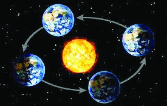
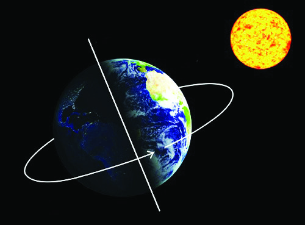
168
സാമൂഹ്്യശാസ്ത്രം | ക്ാസ് V
പകൽ
ഭൂൂമിക്് ഗോuോളാാകൃതി ആയതിനാാൽ ഭൂൂമിയുടെ ഒരു പകുതിയിൽ മാാത്രമേ ഒരു സമയത്്
സൂര്്യപ്രകാാശം ലഭിക്ുന്ുള്ളു. മറ്റേ പകുതിയിൽ ഇരുട്ടാാണ് അനുഭവപ്പെടുന്നത്.
സൂര്്യന് അഭിമുഖമാായി വരുന്ന ഭൂൂമിയുടെ ഭാഗത്് സൂര്്യപ്രകാാശം ലഭിക്കുന്നതിനാാൽ
അവിടെ പകൽ അനുഭവപ്പെടുന്ു. മറുഭാഗത്് സൂര്്യപ്രകാാശം എത്താത്തിനാാൽ
രാത്രിാത്രിയാായിരിക്ും. ഇത്തരത്ിൽ ഭൂൂമിയിൽ രാത്രിാത്രിയും പകലും മാാറി മാാറി
അനുഭവപ്പെടുന്നത് ഭൂൂമിയുടെ ഭ്രമണം മൂൂലമാാണ്. ഭൂൂമി അതിന്റെ സാാങ്കല്ിക
അച്ുതണ്ിൽ സ്്വയം കറങ്ങുന്നതാാണ് ഭ്രമണം (Rotation).
ഭൂമിയുടെ പരിക്രമണം വ്യയക്തമാാക്കുന്ന ഡയഗ്രം ചാാർട്ടിൽ ചിത്രീകരിച്ച്
ക്ലാാസിൽ പ്രദർശിപ്പിക്കുക.
ഭൂമി ഭ്രമണം ചെയ്ുന്നത് പടിഞ്ഞാറുനിന്ന് കിഴക്്കകോട്ടാണ്. അതിനാലാണ് സൂര്്യൻ
കിഴക്ുദിച്് പടിഞ്ഞാറ് അസ്തമിക്ുന്നതായി നമുക്് അനുഭവപ്പെടുന്നത്.
ഭൂമിക്് ഒരു ഭ്രമണം പൂർത്തിയാക്കാൻ 23 മണിക്ൂർ 56 മിനിട്് 4 സെക്കന്റ്
സമയം ആവശ്യമാണ്. ഇതാണ് ഒരു ദിവസം.
ഭ്രമണം ചെയ്യുന്നതോ�ോടൊ�ൊപ്ം ഭൂൂമി
നിശ്ിത സഞ്ചാാരപഥത്ിലൂൂടെ സൂര്്യനെ
ചുറ്റി സഞ്ചരിക്ുന്ുമുണ്്. ഇതാാണ്
പരിക്രമണം (Revolution). ഒരു തവണ
സൂര്്യനെ ചുറ്റി സഞ്ചരിക്കാാൻ ഭൂൂമിക്്
365 ¼ ദിവസം വേണം. ഇതിനെ ഒരു
വർഷമാായി കണക്കാാക്ുന്ു. ഭൂൂമിയുടെ
പരിക്രമണത്തിന്റെ ഫലമാായാാണ് വ്യത്യസ്ത
ഋതുക്കൾ (Seasons) അനുഭവപ്പെടുന്നത്.
ഭൂൂമിയുടെ പരിക്രമണം
പകൽ
രാത്ി
അച്ുതണ്്
ഭൂമിയുടെ ഭ്രമണം
Page 65


169
വിണ്ിലെ വിസ്മയങ്ങളും മണ്ിലെ വിശേഷങ്ങളും
ഋതുക്കൾ
എന്റെź കുുട്ടിിക്കാലംം എന്ത്് രസമാായിി
രുന്നുു..!
സ്കൂൂൾ
തുറക്കുമ്പോƠോൾ
തന്നെ�
പുുത്തനുുടുുപ്പിിനെ� നനയ്ക്കുുന്ന
ഇടവപ്പാതിമഴ..
ഏകദേശംം
രണ്ടുുമാാസത്തോ�ോളംം നീണ്ടുുനിൽക്കുന്ന ഈ
മഴ കർക്കിടകംം കഴിിയുന്നതോ�ോടെെ
ശമിിച്ചുു
തുടങ്ങുംം�. പിന്നെ�
സമ്പൽസമൃദ്ധിിയുടെെയുംം�
ഐശ്വര്യത്തിന്റെźയുംം� മാാസമാായ ചിിങ്ങമാാസത്തിന്റെź
കടന്നുുവരവാണ്്. ഈ സമയംം പ്രകൃതി പൂത്തു
ലഞ്ഞ്് ഓണത്തെ�
വരവേ�ൽക്കുന്ന കാഴ്ച എത്ര
മനോ�ോ
ഹരമാാണെ�ന്നോ�ോ
... തുടർന്ന് കന്നിച്ചൂടിന്
ആശ്വാാ�സം പകർന്ന് തുലാവർഷംം എത്തുന്നുു.
വൃശ്ചിികം- ധനുു മാാസങ്ങൾ പ്രകൃതിയെ� തണുപ്പിിക്കുംം�... മകരമാാസത്തിൽ ചിില വൃക്ഷങ്ങൾ
ഇലപൊ�ൊഴി
ിഞ്ഞു നിൽക്കുന്നത്് കാണാം.. കുംം�ഭംം, മീനം, മേ�ടം
ം മാാസങ്ങളിിലെ� അതിശക്തമാായ
ചൂടുുകൊ�ൊണ്ട്് മിക്കവാറും�ം ജലാശയങ്ങ
ൾ വറ്റിിവരളും�ം...തൊ�ൊടിിയിിൽ കായ്ച്ചുുനിൽക്കുന്ന
മാാവുംം� പ്ലാാവുംം� പ്രകൃതിയെ� ആ സമയത്തുംം� മനോ�ോ
ഹരമാാക്കിയിിരുന്നുു.
മുത്തശ്ശിയുടെ അനുഭവം വായിിച്ചല്്ലലോ. കുട്ടിിക്ാലം മുതൽ തന്റെ ചുറ്ുപാടും
ഉണ്ായ മാറ്റങ്ങളെക്ുറിിച്ചല്ലേ മുത്തശ്ശി ഇവിിടെ പ്രതിിപാദിച്ചിിരിിക്ുന്നത്. എന്ത
തൊക്കെ
മാറ്റങ്ങളാണവ?
•
മഴ
•
എല്ലാാക്കാലത്തുംം� എല്ലാാത്തരം കായ്കനികളും�ം നമുുക്ക് ഒരുപോ�ോലെ�
ലഭിിക്കാറുണ്ടോ�ോ?
ചർച്ചചെ�
യ്യൂൂ.
നൽകിിയിിരിിക്ുന്ന ചിിത്രങ്ങൾ ഏതെല്്ലാാംാം കാലങ്ങളെയാണ് സൂചിിപ്പിിക്ുന്നത്?
•
മഴക്കാലം
Page 66

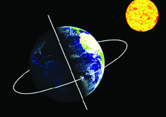
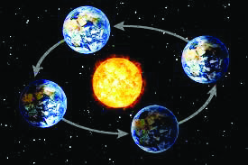
170
സാമൂഹ്്യശാസ്ത്രം | ക്ാസ് V
ദിനാന്തരീക്ഷസ്ിതിയും കാലാവസ്ഥയും
വ്യത്യസ്തകാലങ്ങളിൽ നിങ്ങളുടെ ചുറ്റുപാടും കാണുന്ന കാഴ്ചകൾ എന്തെല്്ലാാം?
ക്ലാസിൽ ചർച്ചചെയ്ത് ചുവടെ നൽകിയിരിക്ുന്ന പട്ിക പൂർത്തിയാക്ൂ.
വേനൽക്കാലം
മഴക്കാലം
മഞ്ഞുകാലം
•
ജലാാാശയങ്ങൾ
വറ്റുന്ു
•
പുഴകൾ
നിറഞ്്ഞഞൊഴുകുന്ു.
•
ഉയർന്ന പ്രദേ�ശങ്ങളിൽ
മഞ്ഞുവീഴ്ച
•
•
•
•
•
•
ഭൂമിയുടെ രണ്ട്് പ്രധാാന ചലനങ്ങളാായ ഭ്രമണവുംം� പരിക്രമണവുംം� അടിസ്ഥാാനമാാക്കി
ചുവടെ നൽകിയിരിക്കുന്ന പട്ടിക പൂർത്തിയാാക്കുക.
ഭ്രമണം
പരിക്രമണം
•
ഭൂൂമി സ്വവന്തം അച്ചുതണ്ടിൽ
സ്്വയം കറങ്ങുന്ു
•
..........................................................................
•
..............................................
•
ഋതുക്കൾ ഉണ്ടാാകുന്നു
കേരളത്ിൽ വിവിധ കാാലങ്ങൾ ഇത്തരത്ിലാാണ് അനുഭവപ്പെടുന്നതെങ്കിങ്കിലും ഭൂൂമിയുടെ
മറ്റ് പ്രദേശങ്ങളിൽ ഈ കാാലങ്ങൾ വ്യത്യസ്തമാായാാണ് അനുഭവപ്പെടുന്നത്. ഭൂൂമിയുടെ
പരിക്രമണവും ഭൂൂമിയിൽ ലഭിക്കുന്ന സൗരോ�ോർജത്തിന്റെ ഏറ്റക്ുറച്ിലുകളുമാാണ്
ഇത്തരത്ിലുളള ഋതുഭേദങ്ങൾക്് (Seasonal Changes) കാാരണമാാകുന്നത്.
ഋതുഭേദങ്ങൾക്കനുസരിച്് അന്തരീക്ഷസ്ിതിയിലും പ്രകൃതിയിലും മാാറ്റങ്ങളുണ്ടാാകുന്ു.
അണ്ടർ 17 ക്രിക്കറ്റ്റ്റ്: മഴ മൂലം ഫൈനൽ
മത്സരം ഉപേക്ഷിക്ഷിച്ു
കൊ�ൊച്ി: ഇന്നലെ നടത്താ
നിരുന്ന
അണ്ടർ
17
ക്രിക്കറ്റ്റ്റ് ഫൈനൽ മത്സരം
പെട്ടെന്നുന്നുണ്ടായ ശക്തമായ
മഴയെത്തുടർന്ന് ഉപേക്ഷിക്ഷിച്ു.
അടുത്ത മൂന്ന് ദിവസത്തേക്്
ശക്തമായ കാറ്്റുുംും മഴയും
ഉണ്ടാകുമെന്ന്ന്ന് കാലാവസ്ഥാ
നിരീക്ഷണകേന്ദ്രംന്ദ്രം അറിയിച്ു.
നിങ്ങളുടെ പ്രദേശത്് ഈ കാാലങ്ങളെല്്ലാാംാം അനുഭവപ്പെടാാറുണ്്ടടോ?
Page 67


171
വിണ്ിലെ വിസ്മയങ്ങളും മണ്ിലെ വിശേഷങ്ങളും
ഈ വാാർത്ത ശ്രദ്ിച്ചില്ലേ. ക്രിക്കറ്റ്റ്റ് മത്സരം ഉപേക്ഷിക്ഷിക്കാാൻ ഇടയാാക്ിയ
സാാഹചര്യമെന്്? അന്തരീക്ഷാാവസ്ഥയിൽ ചിലപ്്പപോഴൊ�ൊക്കെ ഇത്തരം മാാറ്റങ്ങൾ
ഉണ്ടാാകുന്നത് ദിനാന്തരീക്ഷസ്ിതിയിലുണ്ടാാകുന്ന മാറ്റംാറ്റംമൂൂലമാാണ്.
കാലാവസ്ഥ (Climate)
ദീർഘകാലമായി ഒരു പ്രദേശത്ത് അനുഭവപ്പെടുന്ന ദിനാന്തരീക്ഷസ്ിതിയുടെ
ശരാശരിയാണ് കാലാവസ്ഥ (Climate).
ദിനാന്തരീക്ഷസ്ിതി (Weather)
ഒരു പ്രദേശത്ത് നിശ്ചിത സമയത്ത് അനുഭവപ്പെടുന്ന അന്തരീക്ഷ അവസ്ഥയാണ്
ദിനാന്തരീക്ഷസ്ിതി (Weather). നിശ്ചിത സമയത്തെ അന്തരീക്ഷത്തിലെ ഈർപ്പം,
ചൂട്, മഴ, കാറ്റ്റ്റ്, മേഘം തുടങ്ങിങ്ങിയവ ദിനാന്തരീക്ഷസ്ിതിയെ സ്വവാധീനിക്ുന്നു.
കൃത്യവും ശാസ്ത്രീസ്ത്രീയവുമായ ദിനാന്തരീക്ഷ മുന്നറിയിപ്പുകൾ നിത്യജീവിതത്തിൽ എത്രത്്തതോളം
സഹായകമാണ്? ചർച്ചചെയ്ൂ.
ചൂട് കൂടുന്നു: സംസ്ഥാനത്ത്
ജാഗ്രതാ നിർദേശം
ഹിമാചലിൽ വീണ്ും
മഞ്ഞുവീഴ്ച:
സ്കൂളുകൾക്് അവധി
കനത്ത മഴ: 5 ജില്ലകളിൽ
ഓറഞ്ച് അലെർട്്
ശക്തമായ കാറ്റിറ്റിന് സാധ്യത:
മത്സസ്യത്്തതൊഴിലാളികൾ കടലിൽ
പോ�ോകരുതെന്ന്ന്ന് മുന്നറിയിപ്പ്
കാലാവസ്ഥയും ജനജീവിതവും
"ഉറച്ച് കട്ടിയാായിത്തീർന്ന തടാാകങ്ങളുടെ മാാറിലൂടെ
ബസ്സുംം� ലോ�ോറിയുംം� കാാറും�ം ഓടിത്തുടങ്ങുംം�..സ്കീയിങ്്,
സ്കേ�റ്റിങ്് തുടങ്ങിയ വിന്റർസ്പോǝോർട്സുകളുടെ
ബഹളങ്ങളാായിരിക്കുംം� ഓരോ�ോ മൂലയിലുംം�.... വർഷത്തിൽ
അധികകാാലവുംം� മഞ്ഞുമൂടികിടക്കുന്നതുകൊ�ൊണ്ട്് റോ�ോഡുകൾ
ഉറപ്പിലുംം� ഭംഗിയിലുംം� നിലനിർത്താാൻ വളരെെ ബുദ്ധിിമുട്ടും�ം
പണച്ചെ�ലവുംം� ഉണ്ട്...ലാാഹ്തിയുടെ ശരിിയാായ അഴക്
കാാണണമെെങ്കിൽ ഹേ�മന്തകാാലത്ത് ഇവിടെ വരണമെെന്ന്
കാായാാ പറഞ്ഞു. അന്ന് നിലമെെല്ലാം� ധവളാാഭമാായ ഹിമത്താാൽ
മൂടിയിരിക്കുംം�..മരങ്ങളെ�ല്ലാം� വെ�ള്ളക്കടലാാസ് തോ�ോരണങ്ങൾ
പോ�ോലെ� നിലകൊ�ൊള്ളുന്നുണ്ടാാകുംം�.. ഹിമത്തിൽ കളിക്കാാൻ
കുട്ടികൾക്ക് എന്ത് ഉത്സാാഹമാാണെ�ന്നോ�ോ! ഏതാാണ്ട്് ആറുമാാസക്കാാലം നീണ്ട രാാത്രികൾ
തന്നെ�... പകൽ വെ�ളിച്ചം കൂടിയാാൽ ഒന്നോ�ോ രണ്ടോ�ോ മണിക്കൂർ ഉണ്ടാാകുംം�. നിലം നീളെ�
മൂടിക്കിടക്കുന്ന ഹിമത്തിന്റെź ധാാവള്യയവുംം� ആകാാശത്തിന്റെź വെ�ളിച്ചവുംം� കൂടിക്കലർന്ന്
നേ�രിയ നിലാാവ് പരന്നപോ�ോലെ� തോ�ോന്നുംം�".
എസ്.കെ. പൊ�ൊറ്റെക്കാട്
Page 68


172
സാമൂഹ്്യശാസ്ത്രം | ക്ാസ് V
കുറിപ്് വാായിച്ചില്ലേ. പ്രശസ്ത സഞ്ചാാരസാാഹിത്യകാാരനാായ എസ്.കെ. പൊ�ൊറ്റെക്കാടിന്റെ
‘പാാതിരാസൂര്്യന്റെ നാട്ടിാട്ടിൽ’ എന്ന കൃതിയിൽ മഞ്ഞുമൂടിയ പ്രദേശത്തെ
ജനജീവിതത്തെക്ുറിച്് പരാാമർശിക്കുന്ന ഭാഗമാാണ് നിങ്ങൾ വാായിച്ചത്. എന്്തതൊക്കെ
പ്രത്്യയേകതകളാാണ് ഈ പ്രദേശത്ിനുള്ളത്?
•
•
അറ്റ്ലസ് നിരീക്ഷിച്് നോ�ോർവെയുടെ സ്ഥാനം കണ്ടെത്തൂ.
പാതിരാസൂര്്യന്റെ നാട്
പാാതിരാാസൂര്യയന്റെź നാാട് എന്നറിയപ്പെ�ടുന്ന രാാജ്യയമാാണ് നോ�ോർവെ�. യൂറോ�ോപ്പിന്റെź
വടക്കുഭാാഗത്താാണ് നോ�ോർവെ� സ്ഥിതിചെ�യ്യുന്നത്. വർഷത്തിൽ അധികകാാലവുംം�
മഞ്ഞുമൂടിക്കിടക്കുന്ന നോ�ാർവെ�യുടെ ഏറ്റവുംം� വടക്കുള്ള പ്രദേ�ശങ്ങളിൽ ആറ്
മാാസത്തോ�ോളം തുടർച്ചയാായ പകലുംം� ആറുമാാസത്തോ�ോളം തുടർച്ചയാായ രാാത്രിയുമാാണ്
അനുഭവപ്പെ�ടുന്നത്.
ജനവാസ
ം കുറവുള്ള മഞ്ഞുമൂടിക്കിടക്കുന്ന
ഈ പ്രദേശത്തെ ജനജീവിതം ചിട്ടപ്പെടു
ത്ിയിരിക്കുന്നതെങ്ങനെയെന്് നോ�ോക്്കാാംാം.
തുകൽകൊ�ൊണ്് നിർമ്മിച്ചതും വാായു
കടക്കാത്തുമാായ പാാദരക്ഷകളും രോ�ോമ
നിർമ്ിതമാായ വസ്ത്രങ്ങളുമാാണ് ഇവിടത്തെ
ജനങ്ങൾ ധരിക്കുന്നത്. ഇവിടത്തെ
തദ്ദേശീയരാായ ഇന്യുട്്, വളർത്ു നാായകൾ
വലിക്കുന്ന പരന്ന സ്ലെഡ്ജുകളിൽ
സഞ്ചരിക്കുന്നത് സാധാാ
രണ കാാഴ്ചയാാണ്.
ആറുമാസത്്തതോളം നീളുന്ന ശൈത്യകാാലത്് ഇവർ വാസസ്ഥലമാായ ഇഗ്ളുവിൽ
നിന്് പുറത്ിറങ്ങാാറില്ല. അതിശൈത്യത്തെ അതിജീവിക്കുന്ന പന്നൽ, പാായൽ
തുടങ്ങിങ്ങിയവയാാണ് ഇവിടത്തെ മുഖ്യസസ്്യവർഗങ്ങൾ. തിമിംഗലം, മത്സ്യങ്ങൾ,
ഹിമമൂൂങ്ങ, സീൽ, ഹിമക്കരടി തുടങ്ങിങ്ങിയവയാാണ് പ്രധാാന ജന്ുവർഗങ്ങൾ. വേട്ടയാടലും
മത്സ്യബന്ധനവുമാാണ് ജനങ്ങളുടെ പ്രധാാന ഉപജീവനമാാർഗം.
സ്ലെഡ്ജ്
ഇഗ്ളു (Igloo)
ധ്രുുവപ്രദേ�ശങ്ങളിൽ
അധിവസിക്കുന്ന
തദ്ദേŔശീയരാായ
ജനവിഭാാഗമാാണ്
ഇന്യുു�ട്ട്ട്്
അഥവാാ എസ്കിമോ�ോകൾ. ഇവർ മഞ്ഞുകട്ട
കൾകൊ�ൊണ്് നിർമ്ിക്ുന്ന വീടുകളാണ് ഇഗ്ളൂ.
ഇഗ്ളു
Page 69


173
വിണ്ിലെ വിസ്മയങ്ങളും മണ്ിലെ വിശേഷങ്ങളും
ധ്ുവപ്രദേശങ്ങളിൽ നിന്് തികച്ും വ്യത്യസ്തമാായ ഭൂൂമിശാാസ്ത്ര സവിശേഷതകളുള്ള
ഭൂൂവിഭാഗമാാണ് ഉഷ്ണമരുഭൂൂമികൾ. വിശാാലമാായ മണൽപ്പരപ്ുകളും മണൽക്ുന്ു
കളും ഇവിടത്തെ പ്രത്്യയേകതയാാണ്. ഇവിടെ പകൽ താാപം വളരെ കൂടുതലും രാത്രിാത്രി
താാപം വളരെ കുറവുമാാണ്. മഴ തീരെ കുറവാായ ഈ പ്രദേശങ്ങളിൽ ഉയർന്ന താാപവും
വരണ്ടകാറ്്റുുംും ജലദൗർലഭ്യവും അനുഭവപ്പെടുന്ു. ഈ പ്രദേശങ്ങളിൽ ജനവാസ
ം തീരെ
കുറവാാണ്. ഉഷ്ണമരുഭൂൂമികളിൽ കാാലാാവസ്ഥയ്ക്ക് ഇണങ്ങുന്ന ജീവിതരീതിയാാണുളളത്.
തുടർച്ചയാായ വരൾച്ചയും മണൽക്കാറ്റുാറ്റുകളും മരുഭൂൂമികളുടെ മറ്റ് സവിശേഷതകളാാണ്.
അയഞ്ഞ വസ്ത്രങ്ങളും മുഖം മറയ്ക്കുന്ന ശിരോ�ോവസ്ത്രവും മരുഭൂൂമി നിവാസ
ികളുടെ
വസ്ത്രധാാരണത്തിലെ പ്രത്്യയേകതകളാാണ്. സഞ്ചാാരത്ിനും ചരക്ുനീക്കത്ിനും ഒട്ടകത്തെ
ഉപയോ�ോഗിക്കുന്നത് മരുഭൂൂമികളിലെ സാധാാ
രണ കാാഴ്ചയാാണ്.
മരുഭൂമി പ്രദേശത്തിന്റെ മറ്റ് സവിശേഷതകൾ എഴുതി ചാർട്് പൂർത്തിയാക്ുക.
രാത്ി താപം
കുറവ്
മരുഭൂമി
..............................
..............................
..............................
വിശാലമായ
മണൽപ്പരപ്പ്
പകൽ
താപം വളരെ
കൂടുതൽ
മഞ്ഞ് മൂടിക്കിടക്കുന്ന പ്രദേ�ശങ്ങളുടെ സവിശേ�ഷതകളടങ്ങിയ ഡിജിറ്റൽ
ആൽബം ടീച്ചറുടെ സഹാായത്തോ�ോടെ തയ്യാാറാാക്കി ക്ലാാസിൽ അവതരിപ്പിക്കൂ.
മരുഭൂമി
ചിത്രങ്ങൾ ശ്രദ്ിക്കൂ.
Page 70

174
സാമൂഹ്്യശാസ്ത്രം | ക്ാസ് V
ഞാാൻ കെ�നിയയിൽ നിന്നാാണ്
് വരുന്നത്.
അവിടെ 20 കോ�ോടി ജനങ്ങൾ കാാലാാവസ്ഥാാ
മാാറ്റത്തിന്റെź ദുരിതം അനുഭവിക്കുകയാാണ്.
കൊ�ൊടും�ംവരൾച്ചയാാണ്
അവിടെ.
രണ്ട്് വർഷമാായി ഞങ്ങൾക്ക് മഴ കിട്ടിയിട്ട്.
മൂന്നാം വർഷവുംം� അങ്ങനെ� തന്നെ�യാാകുംം�
എന്നാാണ്
് ശാാസ്ത്രജ്ഞർ പറയുന്നത്. ഞങ്ങൾക്ക്
മഴയില്ല. പുഴകളെ�ല്ലാം� വറ്റി. താാപതരംഗങ്ങൾ
വീശിയടിക്കുന്നു. നിങ്ങളുടെ ഹൃദയം ദയവാായി
ഒന്ന് തുറക്കൂ. ഞങ്ങളുടെ വിളകൾ മുഴുവൻ കരിഞ്ഞുണങ്ങി. മൃഗങ്ങളും�ം മനുഷ്യയരും�ം
മരിച്ചുവീഴുകയാാണ്. ഇങ്ങനെ� പോ�ോയാാൽ 2025 ഓടെ ഞങ്ങളിൽ പകുതിപേ�രും�ം ഇല്ലാാതാാകുംം�.
ഈ സമ്മേ�ളനത്തിൽ നിങ്ങൾ എടുക്കുന്ന തീരുമാാനമാാണ് ഞങ്ങൾക്ക് മഴ തിരിച്ചു
തരുമോ�ോ എന്ന് തീരുമാാനിക്കുക. ഞങ്ങളുടെ കൂട്ടുകാാരാായ കുട്ടികൾക്ക് ഭക്ഷണവുംം�
വെ�ള്ളവുംം� ലഭിക്കുമോ�ോ എന്ന് തീരുമാാനിക്കുക. ദയവാായി നിങ്ങൾ ഹൃദയം ഒന്നു തുറക്കൂ..
ദയവാായി നിങ്ങൾ ഹൃദയം ഒന്നു തുറക്കൂ...
ഇത്തരം പ്രത്്യയേകതകളുള്ള പ്രദേശങ്ങളിൽ കാാലാാവസ്ഥയ്ക്ക് ഇണങ്ങുന്ന വേറിട്ട
ജീവിതരീതിയാാണുള്ളത്. ധ്ുവപ്രദേശങ്ങളിലെയും മരുപ്രദേശങ്ങളിലെയും
ഭൗതികവൈവിധ്്യങ്ങൾ അവിടത്തെ ജനജീവിതത്തെ എങ്ങനെയെല്്ലാാംാം
സ്്വവാധീനിക്ുന്നുണ്ടെന്് നാാം ചർച്ചചെയ്തല്്ലലോ. ഒരു പ്രദേശത്തെ കൃഷി, തൊ�ൊഴിൽ,
ആഹാാരം, വസ്ത്രധാാരണരീതി, വീടുനിർമ്മാാണം, ആഘോ�ോഷങ്ങൾ തുടങ്ങിങ്ങിയവയെല്്ലാാംാം
അവിടത്തെ കാാലാാവസ്ഥയ്ക്ക്കനുസരിച്ചാാണ് രൂൂപപ്പെട്ടിട്ടിരിക്കുന്നത്. എന്നാാൽ മനുഷ്യരുടെ
അശാസ്ത്രീാസ്ത്രീയ ഇടപെടലുകൾ സ്്വവാാഭാാവിക പരിസ്ിതിയിൽ മാാറ്റങ്ങൾ വരുത്തുന്നതാായി
പഠനങ്ങൾ സൂൂചിപ്ിക്ുന്ു. ഇതിന്റെ ഫലമാായി ലോ�ോകമെമ്പാടും ഇന്് കാാലാാവസ്ഥയിൽ
ഗണ്യമാായ വ്യതിയാാനങ്ങളുണ്ടാാകുന്ുണ്്.
2021 ഒക്ടടോബർ 31 ന് ഐക്യരാാഷ്ട്രസംഘടനയുടെ ഗ്ലാാസ്�്ഗഗോോ കാാലാാവസ്ഥാസമ്മേളനത്ിൽ
വച്് കെനിയയിൽ നിന്ുള്ള സ്കൂൾ വിദ്യയാാർഥിനിയാായ എലിസബത്് വത്്റ്റി
ലോ�ോകനേതാക്കളോ�ോട് നടത്ിയ അഭ്യർഥനയാാണ് നിങ്ങൾ വാായിച്ചത്.
ഇന്് ലോ�ോകം അഭിമുഖീകരിച്ചുകൊ�ൊണ്ിരിക്കുന്നതും വരുംതലമുറ അഭിമുഖീകരിക്കാാൻ
പോ�ോകുന്നതുമാായ ഏറ്റവും സങ്കീങ്കീർണ്ണമാായ പ്രശ്നമാാണ് കാാലാാവസ്ഥാവ്യതിയാാനം.
ഒരു പ്രദേശത്തിന്റെ കാാലാാവസ്ഥയെ സ്്വവാധീനിക്കുന്ന ഒരു പ്രധാാനഘടകമാാണ് ആ
പ്രദേശത്തിന്റെ അന്തരീക്ഷസ്ിതി. അന്തരീക്ഷത്തിന്റെ താാപനിലയിലുണ്ടാാകുന്ന
ഏറ്റക്ുറച്ിലുകളാാണ് കാാലാാവസ്ഥാവ്യതിയാാനമാായി കണക്കാാക്കുന്നത്.
കാാലാാവസ്ഥാാമാറ്റംാറ്റം ഭൂൂമിയിൽ സാാവധാാനത്ിൽ സംഭവിച്ചുകൊ�ൊണ്ിരിക്കുന്ന ഒരു
പ്രക്രിയയാാണ്. കാാലാാവസ്ഥയിൽ നേരിയതോ�ോതിൽ ഉണ്ടാാകുന്ന മാാറ്റങ്ങൾ പോ�ോലും
പ്രകൃതിയെ സാാരമാായി ബാധിക്ുന്ു. കാാലാാവസ്ഥയിൽ ഉണ്ടാാകുന്ന വ്യതിയാാനം
നമുക്് എങ്ങനെയാാണ് തിരിച്ചറിയാാൻ സാധ
ിക്കുന്നത്?
ലോ�ോകപരിസ്ിതിദിനത്്തതോടനുബന്ധിച്് അനുവിന്റെ സ്കൂളിൽ നടത്ിയ ചിത്ര
പ്രദർശനത്തിലെ ചില ചിത്രങ്ങളാാണ് ചുവടെ നൽകിയിരിക്കുന്നത്.
കാലാവസ്ഥാവ്യതിയാനം
Page 71


175
വിണ്ിലെ വിസ്മയങ്ങളും മണ്ിലെ വിശേഷങ്ങളും
ചിത്രങ്ങൾ നിരീക്ഷിക്കൂ. കാാലാാവസ്ഥാവ്യതിയാാനം കാാരണം ഭൂൂമിയിൽ സംഭവിക്കുന്ന
പ്രകൃതിദുരന്തങ്ങളാാണ് ചിത്രങ്ങളിൽ നൽകിയിട്ടുള്ളത്. ഏതൊ�ൊക്കെയാാണവ?
കാാലാാവസ്ഥാവ്യതിയാാനത്തിന്റെ പ്രത്യയാാഘാാതങ്ങൾ എന്്തതൊക്കെയാണെ
ന്്
പരിശോ�ോധിക്്കാാംാം.
കാലാവസ്ഥാ
വ്യതിയാനം:
പ്രത്യയാഘാതങ്ങൾ
• ആഗോuാാളതാാാപനില ഉയരുന്നു
• സമുുദ്രനിരപ്പിലെ� ഉയർച്ചയുംം� സുനാാമി ദുരന്തങ്ങളും�ം
• കാാലം തെ�റ്റിയ മഴയുംം� മഴയുടെ തോ�ോതിലുള്ള
ഏറ്റക്ുറച്ിലും
• വരൾച്ച
• ധ്രുവപ്രദേ�ശങ്ങളിലെ� മഞ്ഞുരുകൽ
അനിയന്തിതമാായ പ്രകൃതിവിഭവങ്ങളുടെ ഉപയോ�ോഗവും അശാസ്ത്രീാസ്ത്രീയമാായ
നിർമ്മാാണപ്രവർത്തനങ്ങളും ഭൂൂമിയുടെ നിലനില്പിനെ തന്നെ പ്രതികൂൂലമാായി
ബാധിക്ുന്ു.
ചിത്രങ്ങൾ ശ്രദ്ിക്കൂ.
Page 72


176
സാമൂഹ്്യശാസ്ത്രം | ക്ാസ് V
മനുുഷ്യയരുുടെെ അശാാസ്ത്രീീയമായ പല പ്രവർത്തനങ്ങളും�ം കാാലാവസ്ഥാാവ്യതിിയാനങ്ങൾക്ക്്
കാാരണമാകാാറുുണ്ട്്. അവ ഏതെ�ല്ലാാമെെന്ന്് ചിിത്രത്തിൽ നിന്ന്് കണ്ടെ�ത്തി എഴുുതൂ.
•
വാഹനങ്ങളിൽ നിന്നുംം� പുറംതള്ളുുന്ന വിഷവാാതകങ്ങൾ
•
വനനശീീകരണം
ം
•
കാലാവസ്ഥാവ്്യത
ിയാനം ഭൂമിയിലെ എല്ലാ ജീവജാലങ്ങളെയും പലവിധത്തിൽ
ബാധിക്കുന്നുണ്ട്
്. പല ജീവജാലങ്ങളുടെയും വംശനാശത്തിന
ും ഇത് കാരണമാകുന്നു.
പലപ്പോഴും കാലാവസ്ഥാവ്്യത
ിയാനം പ്രകൃതി ദുരന്തങ്ങൾക്ക് പോലും കാരണമാകാറുണ്ട്.
കാലാവസ്ഥാവ്യതിയാനം കാരണം വംശനാശ ഭീഷണി നേരിടുന്ന
ജീവജാലങ്ങളെക്ുറിച്ച് ടീച്ചറിന്റെ സഹായത്ത
തോടെ വിവരങ്ങൾ ശേഖരിച്ച്
ചുമർപത്ിക തയ്ാറാക്കൂ.
നാം അധിവസിക്കുന്ന
മനോ�ോഹരമായ ഭൂമിയും അതിലെ വിഭവങ്ങളും വരുംതലമുറയ്ക്കുകൂടി
അവകാശപ്പെട്ടതാണ്. അതിനാൽ ഇന്ന് നമുക്ക് ലഭ്്യമായിരിക്കുന്ന
പ്രകൃതിവിഭവങ്ങൾ
കരുതലോ�ോട
െ ഉപയോ�ോഗിക്കാൻ നാം ബാധ്്യസ്ഥരാണ്. പ്രകൃതിയുമായി ഇണങ്ങി
ജീവിച്ചുകൊ�ൊണ്ട് കാലാവസ്ഥാവ്്യത
ിയാനം എന്ന വൻവിപത്തിനെത
ിരെ നമുക്ക്
ഒന്നിച്് പോ�ോരാടാം. കാലാവസ്ഥാവ്്യത
ിയാനം ലഘൂകരിക്കുന്നത
ിനായി പരിസ്ഥിത
ി
സംരക്ഷണം ഉറപ്പാക്കേണ്ടത് നമ്മുടെ ഓരോ�ോരുത്തരുടെയും കടമയാണ്.
പരിസ്ഥിത
ിസംരക്ഷണത്തിനായുളള പ്രവർത്തനങ്ങൾ നമ്മുടെ ചുറ്ുപാടിൽ നിന്ന്
തന്നെ
ആരംഭിക്്കാാംാം.
കാലാവസ്ഥാവ്യതിയാനത്തെക്ുറിച്ച് ജനങ്ങളെ
ബോോധവൽക്കരിക്ുന്നതിന്് സഹായകമായ പോ�ോസ്റ്ററുകൾ
തയ്ാറാക്ി ക്ാസിൽ പ്രദർശിപ്ിക്കൂ.
കാലാവസ്ഥാവ്്യത
ിയാനത്തിന
് കാരണമാകുന്ന പ്രവർത്തനങ്ങൾ നിയന്തി
ക്കുന്നത
ിനും പരിസ്ഥിത
ി സംരക്ഷണത്തിനുമായി കേരള
സർക്കാർ വിവിധ
പദ്ധതികൾ ആവിഷ്കരിച്് നടപ്പിലാക്കി വരുന്നു. ഇതിനുദാഹരണമാണ് ഹരിതകേരള
ം
മിഷൻ.
മണ്ണ്്-ജല സംരക്ഷണം, ശുചിത്വം, മാലിന്യസംസ്കരണം, ജൈവകൃഷി
എന്നീ മേഖലകൾക്ക്് ഊന്നൽ നൽകിക്്കകൊണ്ട്് സർക്ാർ നടപ്ിലാക്ുന്ന
പദ്ധതിയാണ്് ഹരിതകേരളം മിഷൻ. ഹരിത കർമ്മസേന, പച്ചത്തു്തുരുത്ത്്
തുടങ്ങിയവ ഹരിതകേരളം മിഷന്റെ ശ്രദ്ധേയമായ കർമ്മപരിപാടികളാണ്്.
ഹരിതകേരളം മിഷൻ
Page 73


177
വിണ്ിലെ വിസ്മയങ്ങളും മണ്ിലെ വിശേഷങ്ങളും
കാലാവസ്ഥാവ്യതിയാനം ലഘൂകരിക്ുന്നതിനായി നിങ്ങൾക്് ചെയ്യാൻ
കഴിയുന്ന പരിസ്ിതി സംരക്ഷണ പ്രവർത്തനങ്ങൾ എന്തെല്്ലാാം? നിങ്ങളുടെ
നിർദേശങ്ങൾ ക്ലാസിലെ വാർത്താ ബോ�ോർഡിൽ പ്രദർശിപ്പിക്ൂ.
അന്തരീക്ഷമലിനീകരണം കുറയ്കുക
വനനശീകരണം തടയുക
പ്ലാസ്റ്റി
ിക് ഉപയോ�ോഗം കുറയ്കുക
ജൈവവള ഉപയോ�ോഗം വർധിപ്പിക്ുക
തുടർപ്രവർത്തനങ്ങൾ
1. കലണ്ടർ നിരീക്ഷിക്്കാാംാം.
ഈ
വർഷത്തെ
കലണ്ടർ
നിരീക്ഷിച്്
ചുവടെ
നൽകിയിരിക്കുന്ന
തീയതികളിലെ സൂര്യോ
ദയസമയവും സൂര്്യയാാസ്തമയസമയവും കണ്ടെത്ി
പട്ടിക പൂൂർത്ിയാാക്ുക.
പട്ടികയിലെ സൂര്യോ
ദയസമയവും സൂര്്യയാാസ്തമയസമയവും ഒരു പോ�ോലെ
യാണോ�ോ? രാത്രിാത്രിയുടെയും പകലിൻ്റെയും ദൈർഘ്യത്ിൽ എന്് വ്യത്യയാസ
മാാണ് നിങ്ങൾ കണ്ടെത്ിയത്? നിങ്ങൾ കണ്ടെത്ിയ വിവരങ്ങൾ നിരീക്ഷണ
ഡയറിയിൽ എഴുതിച്ചേർക്കൂ.
19
20
21
22
23
സൂര്യ്യോദയം
ജൂൺ
ഡിസംബർ
സൂര്്യയാസ്തമയം
ജൂൺ
ഡിസംബർ
തീയതി
മാസം
Page 74
178
സാമൂഹ്്യശാസ്ത്രം | ക്ാസ് V
2. സൂര്്യൻ, ഗ്രഹങ്ങൾ, മറ്റ് ആകാാശഗോuോളങ്ങൾ എന്ിവയെ സംബന്ധിച്ച
വാാർത്തകളും ചിത്രങ്ങളും ശേഖരിച്് ആൽബം തയ്യാാറാാക്ുക.
3. നിരീക്ഷണ കലണ്ടർ തയ്യാാറാാക്്കാാംാം.
നിങ്ങളുടെ പ്രദേശത്് ഓരോ�ോ ഋതുവിലും പ്രകൃതിയിൽ ഉണ്ടാാകുന്ന മാാറ്റങ്ങൾ
നിരീക്ഷിച്് നോ�ോട്ടുട്ടുബുക്ിൽ ക്രമമാായി രേഖപ്പെടുത്ുക. ചിത്രങ്ങൾ കൂടി
ഉൾപ്പെടുത്ി നിരീക്ഷണക്കലണ്ടർ ആകർഷകമാാക്ുക.
4. നൽകിയിരിക്കുന്ന സൂൂചനകൾ അടിസ്ഥാാനമാാക്ി 'മരുഭൂൂമിയിലെയും
ധ്ുവപ്രദേശങ്ങളിലെയും കാാലാാവസ്ഥയും ജനജീവിതവും' എന്ന തലക്കെട്ട്ട്ട്
നൽകി ഒരു ഡിജിറ്റൽ പ്രസന്റേഷൻ തയ്യാാറാാക്ുക.
സൂചനകൾ
•
ആഹാാരം
•
വസ്ത്രധാാാരണം
•
തൊ�ൊഴിൽ
•
പാാാർപ്പിടനിർമ്മാാണം
•
സസ്യയയ-ജന്തുജാാാലങ്ങൾ
5. സൗരയൂഥത്തെക്ുറിച്ുളള കൂടുതൽ വിവരങ്ങൾ ശേഖരിച്് ഉചിതമായ
ചിത്രങ്ങൾകൂടി ഉൾപ്പെടുത്തി ഒരു പതിപ്പ് തയ്യാറാക്ുക. പതിപ്പിന്
അനുയോ�ോജ്യമായ ഒരു പേര് നൽകുമല്്ലലോലോ.